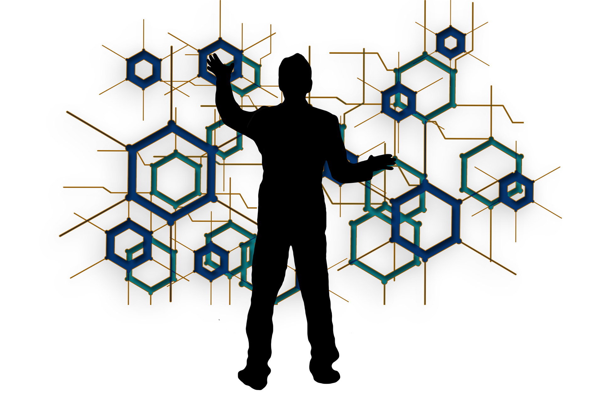

What happens when architecture, AI and blockchain collide? A DAO-based system architecture.
Share

Homeqube incorporates the best of architecture and emerging technologies such as AI and blockchain in a decentralized platform, anchored on a community-focused approach, that pushes for homebuilding for all.
Artificial intelligence is changing -- no, disrupting -- industries like cybersecurity, health and life sciences, and manufacturing as we speak. Architecture is no different, as it continues to tackle home and commercial building projects using construction, design, and building data alongside strategy and creativity.
For starters, a little refresher on definitions. AI is a computer system that can perform tasks that normally entail human intelligence, from speech recognition to decision-making. It harnesses loads of data in a millisecond to arrive at these decisions. Blockchain is a shared ledger that records transactions and tracks assets in a business network. Trading of virtually anything of value occurs on a blockchain network and risks are effectively reduced for parties involved due to its transparency and new efficiencies.
As architecture continues to serve as the intelligent organization of space, there’s great potential for AI and blockchain to enhance current processes in the field and create automated architecture, where a community-based approach on a decentralized platform promises to deliver home requirements for all.
The Problem
In homebuilding among countries where households have limited budgets, optimization is key. Building the “best” home out of the maximum affordable lot would be ideal, but it’s not easy to determine how this is decided.
In reality, the current end-to-end process of homebuilding takes several months to a few years, depending on the project size and complexity. Commonly encountered challenges during homebuilding include construction delays, inaccurate budget and planning, and waste generation.
AI, along with the multidisciplinary field of data science, addresses these pain points by representing home building components in data and applying data-driven solutions to it.
While computers can hardly replace architecture and its open-ended creative solutions, automation can save time from performing repetitive tasks, reinvest such time in design, and perform optimization across all fronts.
The Solution

Through machine learning, computers do the computations and provide suggestions guided by the laws of engineering they learned. Let humans choose and decide what’s best for them, and this way the burden is lighter while homebuilding efficiencies are multiplied.
This is already happening today as machine learning is used in improving quality designs for a more efficient building information modeling (BIM).
In addition, machine learning is used in developing safety precautions and monitoring in construction sites. These reflect nothing less than how AI helps solve homebuilding-related problems.
Our System Architecture Platform
Homeqube introduces a system architecture platform comprising “knobs,” which are essentially composed of several decentralized applications (dApps) that allow an open decentralized autonomous organization (DAO) architecture. In the long term it will have a cumulative effect, which will remove bureaucracies, hierarchies, hurdles, and bring back power to the community and its stakeholders.
Think of a house with different components: beams, columns, roof, doors, windows, fixtures, water closets, and pipes, and as spaces including the living room, corridor, kitchen, bathroom, and bedroom. These components can be represented by data, which contain the attributes and relationships to other components. These knobs perform the sense-making of all of these in our design processes.
In the traditional process, the data is determined and tested on several metrics based on existing knowledge processes. With data and our embedded processes combined, the homebuilding process becomes more efficient. Guesswork can be eliminated, and there arise more accurate data-driven solutions.
By optimization, these pros can explore different design points based on different parameters and constraints. AI makes the planning process for architects significantly easier, providing access to copious amounts of data, creating models and cost estimates, and reimagining the building environment, to name a few.
All this information shortens design and building time, and accelerates the building journey without sacrificing quality and the creative process.

“Our human intellectual history, we have championed the individual prowess on several spheres of competencies, on art, on architecture, on fashion, etc., without a doubt, they are all remarkable works,” said Homeqube founder and CEO JP Calma.
“But let us imagine what could be harnessed from a community intelligence standpoint with our cumulative minds interconnected. Isn’t a more creative genius output easier from a community system? The most intuitive answer is a definite positive, and therefore I am pursuing this for the global homebuilding community as the purpose of the entire technology augmentation. Augmenting creative Intelligence is also the motivation of our AI model.”

For Kristoffer Dave Tabong, director of data systems at Homeqube: “Human creativity, while abundant, is siloed by diverse societies. We have different ways of expressing our thoughts and ideas as if we have different languages to express them. Thus, we have limitations on understanding and sharing creativity across diverse societies.”
“Given this, how can we make a creative world that is robust and clearly understood by societies? The answer lies on the left side of the human brain; verbal, analytics, and order. I am pursuing to create a data system architecture that will encompass creativity across. In this way, users can understand creativity in terms of semantics, apply other ideas through synergies, and interpret design using analytics. Augmenting both creative intelligence (CI) and artificial intelligence (AI) is what comprises Homeqube’s brain.”
Luis Silvestre Jr., PhD, director of operating systems, delves on the challenges ahead, including pursuing “more robust” mathematics in the implementation.
“Mathematics has been the foundation of AI, and as computer languages differ, more robust mathematics is essential to encapsulate the platform. The challenge of our mathematics requirement is on how to co-create more mathematics from the community harnessing more computation power that is relevant to the multifarious case uses -- in other words, complexities at its best is what motivates us and where we thrive best.”
Homeqube promotes a community-based approach in implementing AI in architecture and homebuilding as it reinforces the transparency, openness, and community-centered decision-making that can offer a sense of what is “best” for users and people.
Contrary to what might be perceived, AI does not dictate what is best for users, but instead provides every possibility for them to choose what you truly desire. The system learns this from various inputs, increasing the likelihood of finding the optimal choice for varying, highly diverse aspects of homebuilding.
At Homeqube, we promote a community-based approach to homebuilding as enabled by empowering technologies such as AI and blockchain. Read our whitepaper to learn more.
Published on April 2022
Share